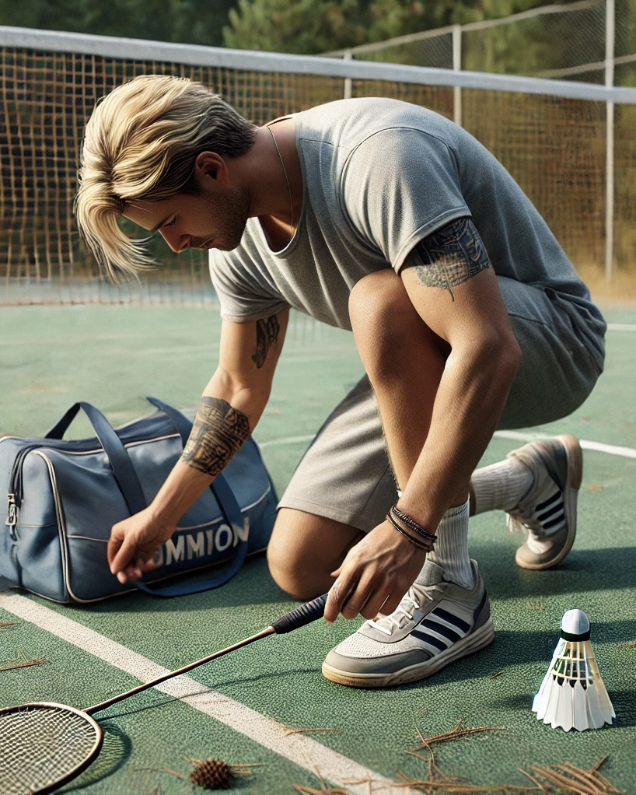
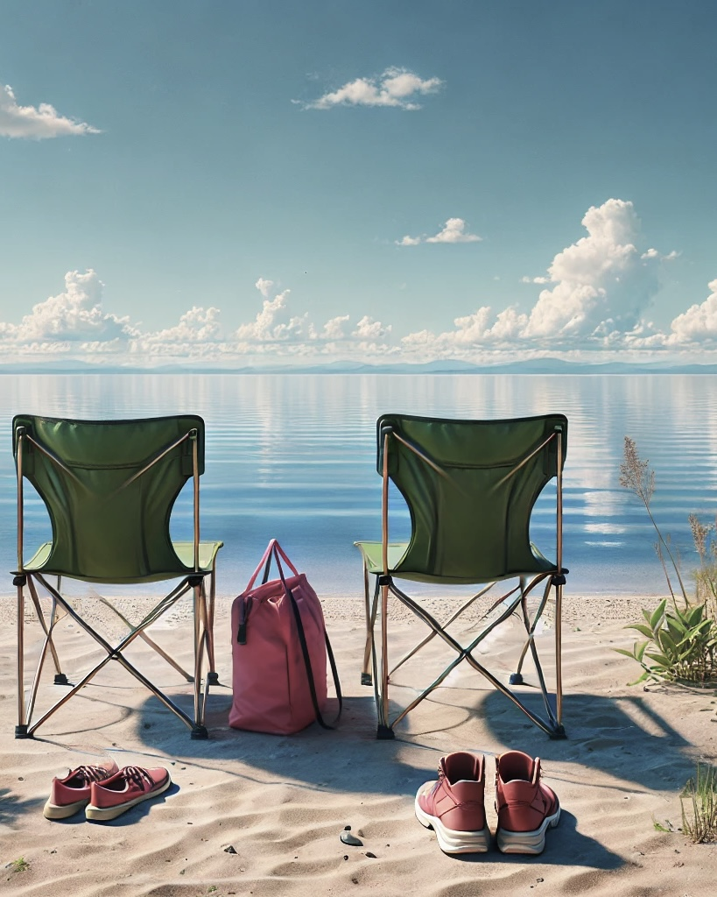
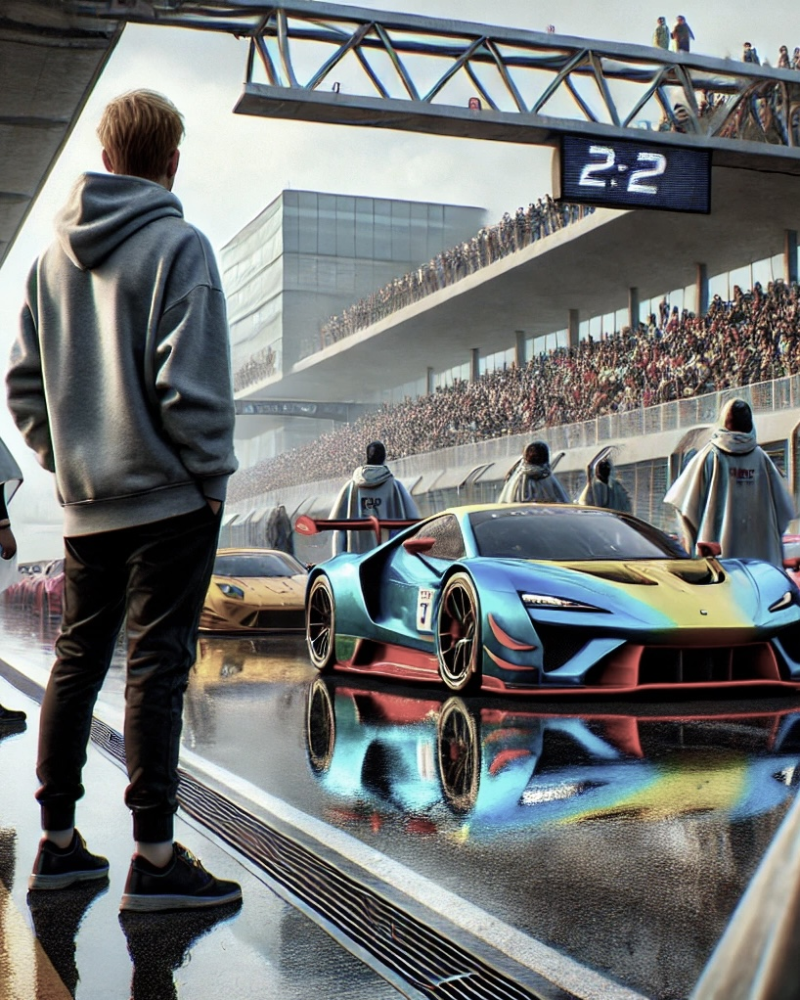

Спорт
|
Любовь к спорту с самого детсва привили родители, отдав в секцию по хоккею. 9 лет игры в хоккей заложили базу физического развития, а также дали навыки работы в команде. После хоккея занимался единоборствами и фитнесом. Сегодня же я постоянный посетитель тренажерного зала, но также не исключаю из жизни и прочие активности, вроде бадминтона, поездок на велосипеде, плавания и пеших прогулок. |
 |
IT
|
Несколько лет хотел сменить профессию и развиваться в IT-сфере, но всегда находились причины отложить эту идею. В конце 2024 года твердо решил действовать и, начав изучение языка программирования JavaScript, прослушав пре-курс и успешно пройдя вступительные испытания, уволился с прерыдущего места работы и поступил в школу программирования Elbrus на курс по направлению - Веб-разработка. Сейчас прохожу интенсивный курс обучения и по окончанию планирую устроиться на работу по новой полученной специальности веб-разработчика. |
Путешествия
|
Огромный интерес у меня вызывают путешествия. Дальняя поездка - это всегда приключение, которое надолго оседает в памяти, подарив море впечатлений в моменте. Будь то дальний перелет заграницу или поездка загород на автомобиле, смена обстановки зачастую является необходимостью для ментальной перезагрузки. Надеюсь, в ближайшем будущем удастся выбраться за пределы привычной атмосферы и отправиться навстречу приключениям. |
 |
Автомобили и мотоциклы
|
Автомобили и мотоциклы - это отдельное пристрастие. Обожаю посещать мероприятия на тему автомобилей: гонки, дрифт, просто выставки эксклюзивных или тюнинговонных автомобилей и прочие ивенты этой тематики. Кроме этого, люблю прокатиться на мотоцикле в теплый солнечный летний день. Но если даже день не теплый и не солнечный, то это не значит, что я откажусь от поездки. |
 |